Heat Maps on MREF Floor Plan
In this guide, we will learn how to generate heat maps on the MREF Floor Plan using events received from Cisco Spaces. These heat maps help visualize user movement patterns on a floor using coordinate-based data (x_pos and y_pos).
We’ll walk through the full process including verifying floor plans, creating calculated metrics, and rendering heat maps on a custom dashboard.
Overview
Cisco Spaces sends real-time user location events which include X and Y positions. Using this data, we can:
- Plot heat maps on SVG-based floor plans.
- Observe occupancy trends.
- Analyze behavior across time (hourly, daily, etc.).
Step-by-Step Guide to Generate Heat Maps
Step 1: Verify Floor Plan for the MREF Floor
- Go to Dashboard → Location View.
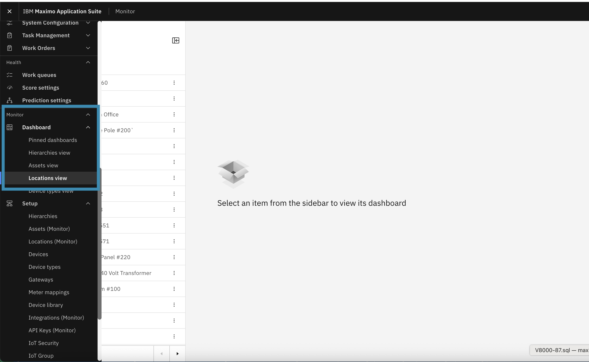
- Use the search bar to find the desired Floor Name.
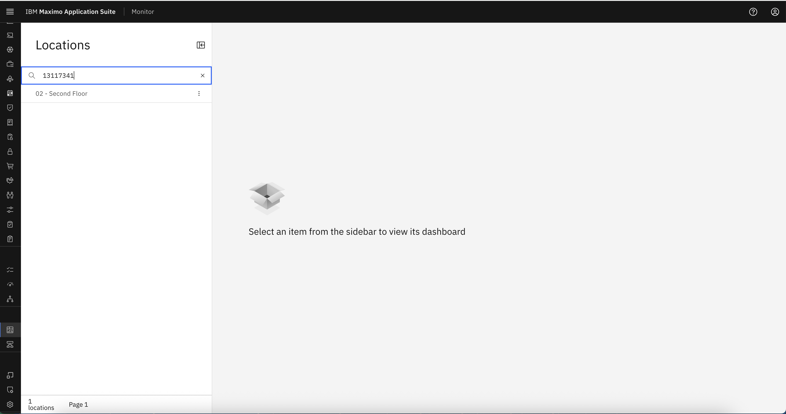
- Click on the floor to open dashboards.
- On the right-side pane, select the Workplace Analytics tab.
- Ensure that a floor plan (.svg) has been generated from MREF. 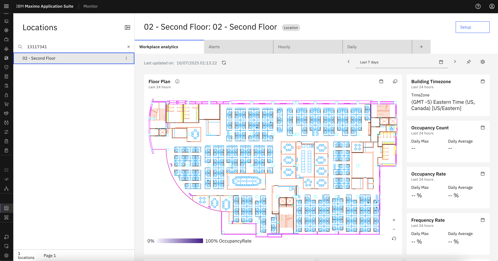
Step 2: Create Occupancy Location Calculated Metric
We now create a calculated metric to capture occupancy data over time.
- Navigate back to the Locations tab.
- Open the Calculated Metrics tab.
- Click Add Calculated Metric. 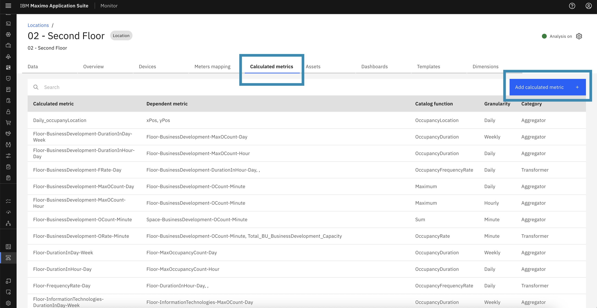
Configure the Metric:
- This will open a pop-up with the list of function to calculate the batch data metrics 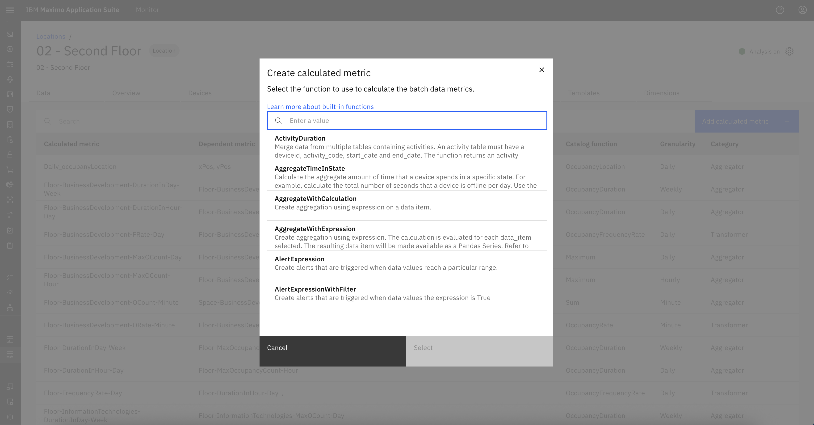
- From this popup, search and select:
OccupancyLocationaggregate function. 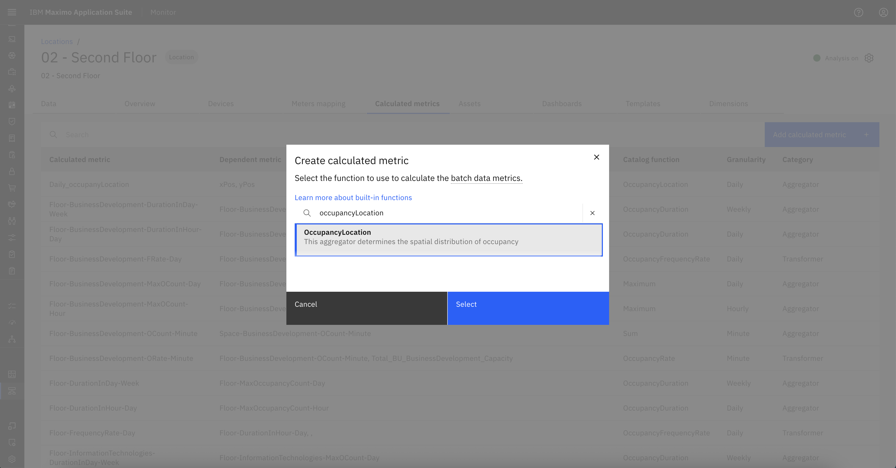
Fill in the configuration fields:
- Scope: Define the nodes to include. 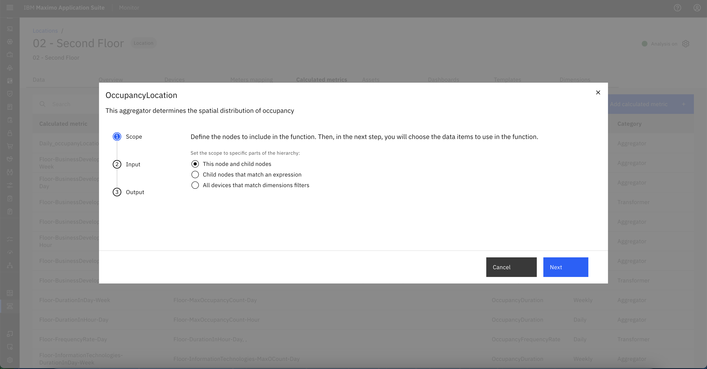
- Input: Select
x_posandy_posmetrics from the dropdown. 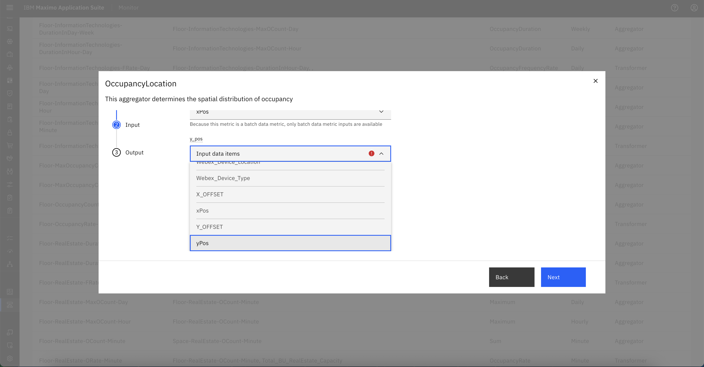 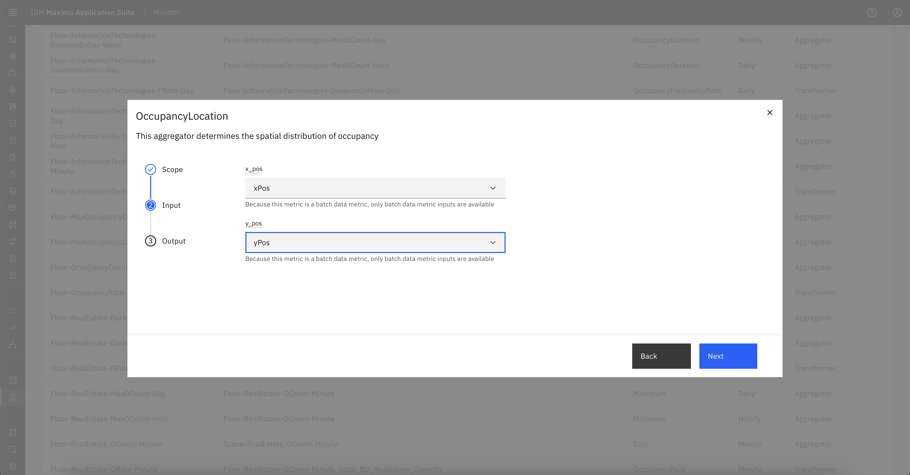 -
Output:
- Granularity: Hourly (For this lab, we will use hourly granularity)
- Auto Schedule: Enabled (or turn off and select custom time range)
- Output Data Item Name: Provide any name for the data item , eg.
Hourly_OccupancyLocation
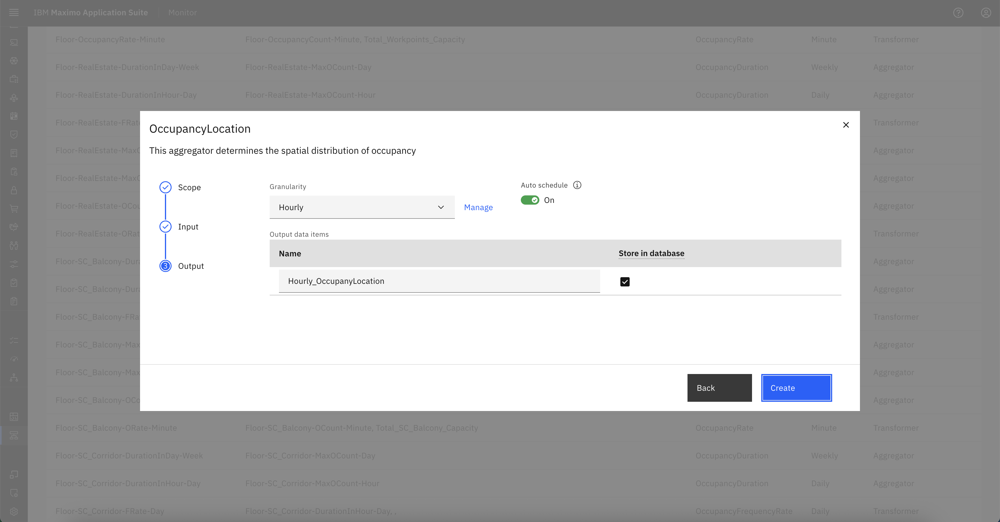
-
Click Create.
- The metric
Hourly_OccupancyLocationwill now appear in the list of Calculated Metrics. 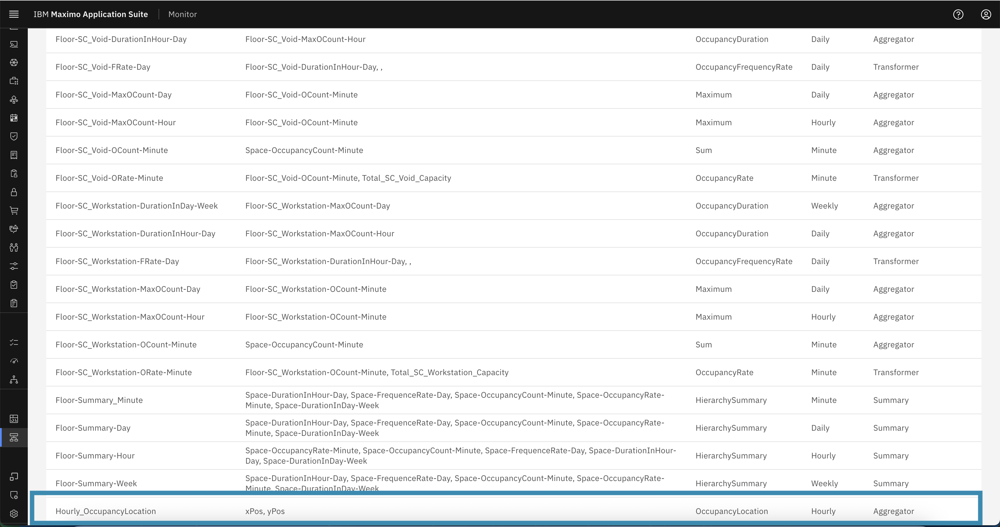
- The metric
Step 3: Create or Update Dashboard to Visualize Heat Map
You can either create a new dashboard or add a card to an existing one.
- Go to the Dashboards tab.
-
Click Add Dashboard, provide a title, and click Configure Dashboard.
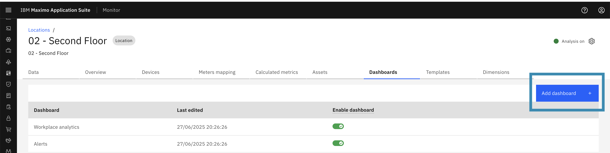
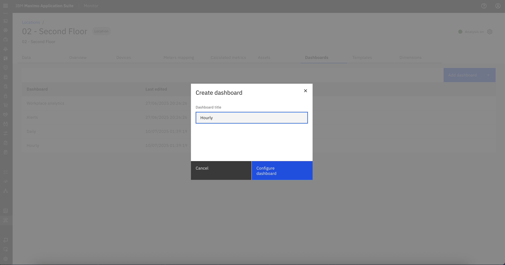
Add Heat Map Card:
-
From the right-side Gallery, select:
Floorplan with overlay. 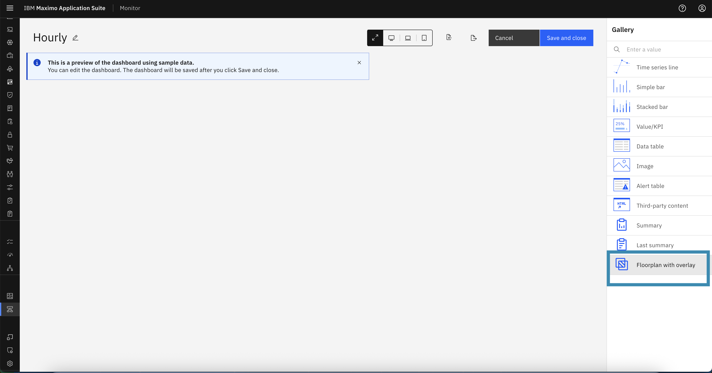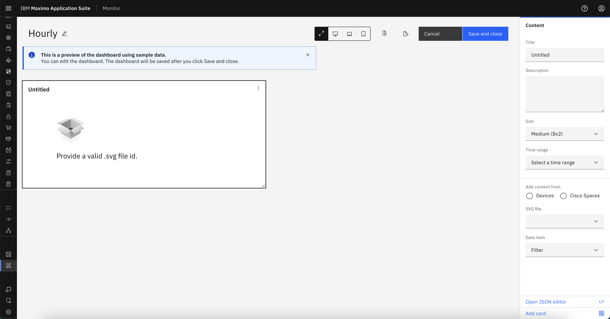
-
Fill in the card configuration details:
- Title: Heat Map or any relevant title
- Description: Describe what the card visualizes
- Card Size: Choose based on layout
- Time Range: Select desired time range
- Data Source: Choose Cisco Spaces
- SVG File: Select the appropriate floor plan.
- Data Item: Select
Hourly_OccupancyLocation
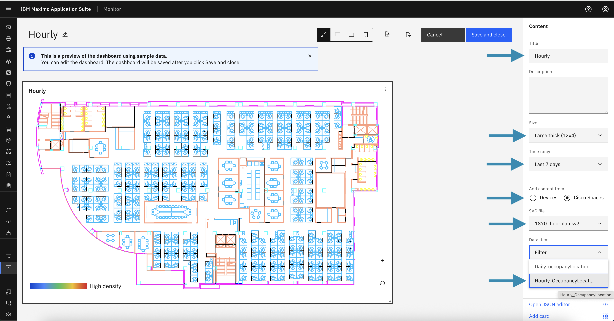
-
Click Save and Close.
Step 4: Wait for Pipeline Execution and View the Heat Map
- The system will automatically schedule the pipeline to process the calculated metric.
- Once processed, go back to:
Dashboard → Location View → Search Floor Name
- Open the newly created dashboard (e.g.,
"Hourly"). - You should now see the heat map overlayed on the SVG floor plan.
-
The heat map visualizes user density and movement across the floor.
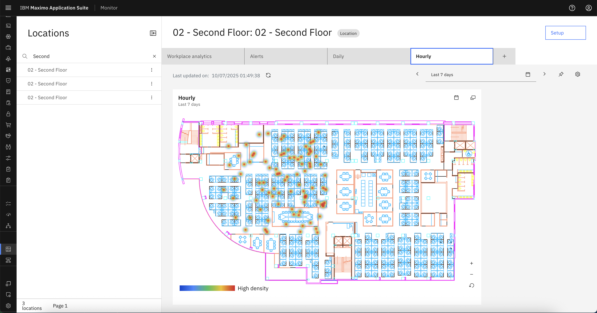
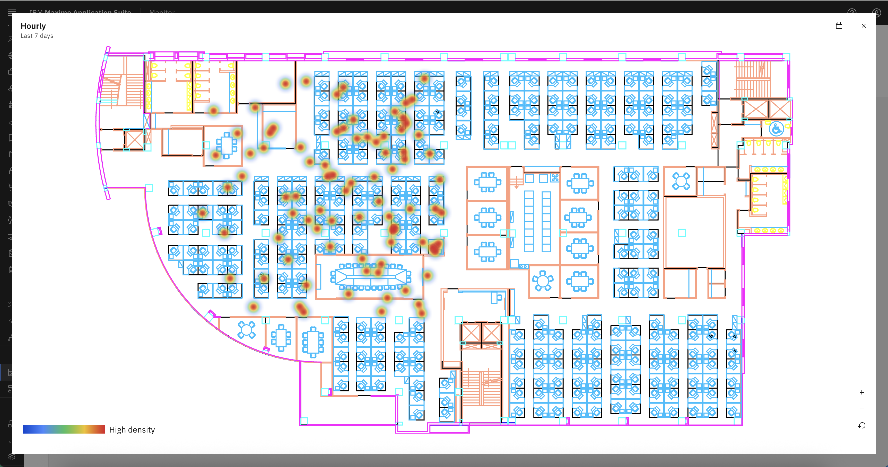
Summary
You have now successfully:
- Created a calculated metric for occupancy data.
- Configured a dashboard with a heat map overlay.
- Visualized Cisco Spaces event data on MREF floor maps.
This process enables facilities teams to gain actionable insights into user flow and space utilization using real-time data from Cisco Spaces.